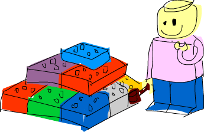

Modules
Loading modules

A Haskell module is a collection of related functions, types and typeclasses. A Haskell program is a collection of modules where the main module loads up the other modules and then uses the functions defined in them to do something. Having code split up into several modules has quite a lot of advantages. If a module is generic enough, the functions it exports can be used in a multitude of different programs. If your own code is separated into self-contained modules which don't rely on each other too much (we also say they are loosely coupled), you can reuse them later on. It makes the whole deal of writing code more manageable by having it split into several parts, each of which has some sort of purpose.
The Haskell standard library is split into modules, each of them contains functions and types that are somehow related and serve some common purpose. There's a module for manipulating lists, a module for concurrent programming, a module for dealing with complex numbers, etc. All the functions, types and typeclasses that we've dealt with so far were part of the Prelude module, which is imported by default. In this chapter, we're going to examine a few useful modules and the functions that they have. But first, we're going to see how to import modules.
The syntax for importing modules in a Haskell script is import <module name>. This must be done before defining any functions, so imports are usually done at the top of the file. One script can, of course, import several modules. Just put each import statement into a separate line. Let's import the Data.List module, which has a bunch of useful functions for working with lists and use a function that it exports to create a function that tells us how many unique elements a list has.
import Data.List numUniques :: (Eq a) => [a] -> Int numUniques = length . nub
When you do import Data.List, all the functions that Data.List exports become available in the global namespace, meaning that you can call them from wherever in the script. nub is a function defined in Data.List that takes a list and weeds out duplicate elements. Composing length and nub by doing length . nub produces a function that's the equivalent of \xs -> length (nub xs).
You can also put the functions of modules into the global namespace when using GHCI. If you're in GHCI and you want to be able to call the functions exported by Data.List, do this:
ghci> :m + Data.List
If we want to load up the names from several modules inside GHCI, we don't have to do :m + several times, we can just load up several modules at once.
ghci> :m + Data.List Data.Map Data.Set
However, if you've loaded a script that already imports a module, you don't need to use :m + to get access to it.
If you just need a couple of functions from a module, you can selectively import just those functions. If we wanted to import only the nub and sort functions from Data.List, we'd do this:
import Data.List (nub, sort)
You can also choose to import all of the functions of a module except a few select ones. That's often useful when several modules export functions with the same name and you want to get rid of the offending ones. Say we already have our own function that's called nub and we want to import all the functions from Data.List except the nub function:
import Data.List hiding (nub)
Another way of dealing with name clashes is to do qualified imports. The Data.Map module, which offers a data structure for looking up values by key, exports a bunch of functions with the same name as Prelude functions, like filter or null. So when we import Data.Map and then call filter, Haskell won't know which function to use. Here's how we solve this:
import qualified Data.Map
This makes it so that if we want to reference Data.Map's filter function, we have to do Data.Map.filter, whereas just filter still refers to the normal filter we all know and love. But typing out Data.Map in front of every function from that module is kind of tedious. That's why we can rename the qualified import to something shorter:
import qualified Data.Map as M
Now, to reference Data.Map's filter function, we just use M.filter.
Use this handy reference to see which modules are in the standard library. A great way to pick up new Haskell knowledge is to just click through the standard library reference and explore the modules and their functions. You can also view the Haskell source code for each module. Reading the source code of some modules is a really good way to learn Haskell and get a solid feel for it.
To search for functions or to find out where they're located, use Hoogle. It's a really awesome Haskell search engine, you can search by name, module name or even type signature.
Data.List
The Data.List module is all about lists, obviously. It provides some very useful functions for dealing with them. We've already met some of its functions (like map and filter) because the Prelude module exports some functions from Data.List for convenience. You don't have to import Data.List via a qualified import because it doesn't clash with any Prelude names except for those that Prelude already steals from Data.List. Let's take a look at some of the functions that we haven't met before.
intersperse takes an element and a list and then puts that element in between each pair of elements in the list. Here's a demonstration:
ghci> intersperse '.' "MONKEY" "M.O.N.K.E.Y" ghci> intersperse 0 [1,2,3,4,5,6] [1,0,2,0,3,0,4,0,5,0,6]
intercalate takes a list of lists and a list. It then inserts that list in between all those lists and then flattens the result.
ghci> intercalate " " ["hey","there","guys"] "hey there guys" ghci> intercalate [0,0,0] [[1,2,3],[4,5,6],[7,8,9]] [1,2,3,0,0,0,4,5,6,0,0,0,7,8,9]
transpose transposes a list of lists. If you look at a list of lists as a 2D matrix, the columns become the rows and vice versa.
ghci> transpose [[1,2,3],[4,5,6],[7,8,9]] [[1,4,7],[2,5,8],[3,6,9]] ghci> transpose ["hey","there","guys"] ["htg","ehu","yey","rs","e"]
Say we have the polynomials 3x2 + 5x + 9, 10x3 + 9 and 8x3 + 5x2 + x - 1 and we want to add them together. We can use the lists [0,3,5,9], [10,0,0,9] and [8,5,1,-1] to represent them in Haskell. Now, to add them, all we have to do is this:
ghci> map sum $ transpose [[0,3,5,9],[10,0,0,9],[8,5,1,-1]] [18,8,6,17]
When we transpose these three lists, the third powers are then in the first row, the second powers in the second one and so on. Mapping sum to that produces our desired result.

foldl' and foldl1' are stricter versions of their respective lazy incarnations. When using lazy folds on really big lists, you might often get a stack overflow error. The culprit for that is that due to the lazy nature of the folds, the accumulator value isn't actually updated as the folding happens. What actually happens is that the accumulator kind of makes a promise that it will compute its value when asked to actually produce the result (also called a thunk). That happens for every intermediate accumulator and all those thunks overflow your stack. The strict folds aren't lazy buggers and actually compute the intermediate values as they go along instead of filling up your stack with thunks. So if you ever get stack overflow errors when doing lazy folds, try switching to their strict versions.
concat flattens a list of lists into just a list of elements.
ghci> concat ["foo","bar","car"] "foobarcar" ghci> concat [[3,4,5],[2,3,4],[2,1,1]] [3,4,5,2,3,4,2,1,1]
It will just remove one level of nesting. So if you want to completely flatten [[[2,3],[3,4,5],[2]],[[2,3],[3,4]]], which is a list of lists of lists, you have to concatenate it twice.
Doing concatMap is the same as first mapping a function to a list and then concatenating the list with concat.
ghci> concatMap (replicate 4) [1..3] [1,1,1,1,2,2,2,2,3,3,3,3]
and takes a list of boolean values and returns True only if all the values in the list are True.
ghci> and $ map (>4) [5,6,7,8] True ghci> and $ map (==4) [4,4,4,3,4] False
or is like and, only it returns True if any of the boolean values in a list is True.
ghci> or $ map (==4) [2,3,4,5,6,1] True ghci> or $ map (>4) [1,2,3] False
any and all take a predicate and then check if any or all the elements in a list satisfy the predicate, respectively. Usually we use these two functions instead of mapping over a list and then doing and or or.
ghci> any (==4) [2,3,5,6,1,4] True ghci> all (>4) [6,9,10] True ghci> all (`elem` ['A'..'Z']) "HEYGUYSwhatsup" False ghci> any (`elem` ['A'..'Z']) "HEYGUYSwhatsup" True
iterate takes a function and a starting value. It applies the function to the starting value, then it applies that function to the result, then it applies the function to that result again, etc. It returns all the results in the form of an infinite list.
ghci> take 10 $ iterate (*2) 1 [1,2,4,8,16,32,64,128,256,512] ghci> take 3 $ iterate (++ "haha") "haha" ["haha","hahahaha","hahahahahaha"]
splitAt takes a number and a list. It then splits the list at that many elements, returning the resulting two lists in a tuple.
ghci> splitAt 3 "heyman"
("hey","man")
ghci> splitAt 100 "heyman"
("heyman","")
ghci> splitAt (-3) "heyman"
("","heyman")
ghci> let (a,b) = splitAt 3 "foobar" in b ++ a
"barfoo"
takeWhile is a really useful little function. It takes elements from a list while the predicate holds and then when an element is encountered that doesn't satisfy the predicate, it's cut off. It turns out this is very useful.
ghci> takeWhile (>3) [6,5,4,3,2,1,2,3,4,5,4,3,2,1] [6,5,4] ghci> takeWhile (/=' ') "This is a sentence" "This"
Say we wanted to know the sum of all third powers that are under 10,000. We can't map (^3) to [1..], apply a filter and then try to sum that up because filtering an infinite list never finishes. You may know that all the elements here are ascending but Haskell doesn't. That's why we can do this:
ghci> sum $ takeWhile (<10000) $ map (^3) [1..] 53361
We apply (^3) to an infinite list and then once an element that's over 10,000 is encountered, the list is cut off. Now we can sum it up easily.
dropWhile is similar, only it drops all the elements while the predicate is true. Once predicate equates to False, it returns the rest of the list. An extremely useful and lovely function!
ghci> dropWhile (/=' ') "This is a sentence" " is a sentence" ghci> dropWhile (<3) [1,2,2,2,3,4,5,4,3,2,1] [3,4,5,4,3,2,1]
We're given a list that represents the value of a stock by date. The list is made of tuples whose first component is the stock value, the second is the year, the third is the month and the fourth is the date. We want to know when the stock value first exceeded one thousand dollars!
ghci> let stock = [(994.4,2008,9,1),(995.2,2008,9,2),(999.2,2008,9,3),(1001.4,2008,9,4),(998.3,2008,9,5)] ghci> head (dropWhile (\(val,y,m,d) -> val < 1000) stock) (1001.4,2008,9,4)
span is kind of like takeWhile, only it returns a pair of lists. The first list contains everything the resulting list from takeWhile would contain if it were called with the same predicate and the same list. The second list contains the part of the list that would have been dropped.
ghci> let (fw, rest) = span (/=' ') "This is a sentence" in "First word:" ++ fw ++ ", the rest:" ++ rest "First word: This, the rest: is a sentence"
Whereas span spans the list while the predicate is true, break breaks it when the predicate is first true. Doing break p is the equivalent of doing span (not . p).
ghci> break (==4) [1,2,3,4,5,6,7] ([1,2,3],[4,5,6,7]) ghci> span (/=4) [1,2,3,4,5,6,7] ([1,2,3],[4,5,6,7])
When using break, the second list in the result will start with the first element that satisfies the predicate.
sort simply sorts a list. The type of the elements in the list has to be part of the Ord typeclass, because if the elements of a list can't be put in some kind of order, then the list can't be sorted.
ghci> sort [8,5,3,2,1,6,4,2] [1,2,2,3,4,5,6,8] ghci> sort "This will be sorted soon" " Tbdeehiillnooorssstw"
group takes a list and groups adjacent elements into sublists if they are equal.
ghci> group [1,1,1,1,2,2,2,2,3,3,2,2,2,5,6,7] [[1,1,1,1],[2,2,2,2],[3,3],[2,2,2],[5],[6],[7]]
If we sort a list before grouping it, we can find out how many times each element appears in the list.
ghci> map (\l@(x:xs) -> (x,length l)) . group . sort $ [1,1,1,1,2,2,2,2,3,3,2,2,2,5,6,7] [(1,4),(2,7),(3,2),(5,1),(6,1),(7,1)]
inits and tails are like init and tail, only they recursively apply that to a list until there's nothing left. Observe.
ghci> inits "w00t"
["","w","w0","w00","w00t"]
ghci> tails "w00t"
["w00t","00t","0t","t",""]
ghci> let w = "w00t" in zip (inits w) (tails w)
[("","w00t"),("w","00t"),("w0","0t"),("w00","t"),("w00t","")]
Let's use a fold to implement searching a list for a sublist.
search :: (Eq a) => [a] -> [a] -> Bool
search needle haystack =
let nlen = length needle
in foldl (\acc x -> if take nlen x == needle then True else acc) False (tails haystack)
First we call tails with the list in which we're searching. Then we go over each tail and see if it starts with what we're looking for.
With that, we actually just made a function that behaves like isInfixOf. isInfixOf searches for a sublist within a list and returns True if the sublist we're looking for is somewhere inside the target list.
ghci> "cat" `isInfixOf` "im a cat burglar" True ghci> "Cat" `isInfixOf` "im a cat burglar" False ghci> "cats" `isInfixOf` "im a cat burglar" False
isPrefixOf and isSuffixOf search for a sublist at the beginning and at the end of a list, respectively.
ghci> "hey" `isPrefixOf` "hey there!" True ghci> "hey" `isPrefixOf` "oh hey there!" False ghci> "there!" `isSuffixOf` "oh hey there!" True ghci> "there!" `isSuffixOf` "oh hey there" False
elem and notElem check if an element is or isn't inside a list.
partition takes a list and a predicate and returns a pair of lists. The first list in the result contains all the elements that satisfy the predicate, the second contains all the ones that don't.
ghci> partition (`elem` ['A'..'Z']) "BOBsidneyMORGANeddy"
("BOBMORGAN","sidneyeddy")
ghci> partition (>3) [1,3,5,6,3,2,1,0,3,7]
([5,6,7],[1,3,3,2,1,0,3])
It's important to understand how this is different from span and break:
ghci> span (`elem` ['A'..'Z']) "BOBsidneyMORGANeddy"
("BOB","sidneyMORGANeddy")
While span and break are done once they encounter the first element that doesn't and does satisfy the predicate, partition goes through the whole list and splits it up according to the predicate.
find takes a list and a predicate and returns the first element that satisfies the predicate. But it returns that element wrapped in a Maybe value. We'll be covering algebraic data types more in depth in the next chapter but for now, this is what you need to know: a Maybe value can either be Just something or Nothing. Much like a list can be either an empty list or a list with some elements, a Maybe value can be either no elements or a single element. And like the type of a list of, say, integers is [Int], the type of maybe having an integer is Maybe Int. Anyway, let's take our find function for a spin.
ghci> find (>4) [1,2,3,4,5,6] Just 5 ghci> find (>9) [1,2,3,4,5,6] Nothing ghci> :t find find :: (a -> Bool) -> [a] -> Maybe a
Notice the type of find. Its result is Maybe a. That's kind of like having the type of [a], only a value of the type Maybe can contain either no elements or one element, whereas a list can contain no elements, one element or several elements.
Remember when we were searching for the first time our stock went over $1000. We did head (dropWhile (\(val,y,m,d) -> val < 1000) stock). Remember that head is not really safe. What would happen if our stock never went over $1000? Our application of dropWhile would return an empty list and getting the head of an empty list would result in an error. However, if we rewrote that as find (\(val,y,m,d) -> val > 1000) stock, we'd be much safer. If our stock never went over $1000 (so if no element satisfied the predicate), we'd get back a Nothing. But there was a valid answer in that list, we'd get, say, Just (1001.4,2008,9,4).
elemIndex is kind of like elem, only it doesn't return a boolean value. It maybe returns the index of the element we're looking for. If that element isn't in our list, it returns a Nothing.
ghci> :t elemIndex elemIndex :: (Eq a) => a -> [a] -> Maybe Int ghci> 4 `elemIndex` [1,2,3,4,5,6] Just 3 ghci> 10 `elemIndex` [1,2,3,4,5,6] Nothing
elemIndices is like elemIndex, only it returns a list of indices, in case the element we're looking for crops up in our list several times. Because we're using a list to represent the indices, we don't need a Maybe type, because failure can be represented as the empty list, which is very much synonymous to Nothing.
ghci> ' ' `elemIndices` "Where are the spaces?" [5,9,13]
findIndex is like find, but it maybe returns the index of the first element that satisfies the predicate. findIndices returns the indices of all elements that satisfy the predicate in the form of a list.
ghci> findIndex (==4) [5,3,2,1,6,4] Just 5 ghci> findIndex (==7) [5,3,2,1,6,4] Nothing ghci> findIndices (`elem` ['A'..'Z']) "Where Are The Caps?" [0,6,10,14]
We already covered zip and zipWith. We noted that they zip together two lists, either in a tuple or with a binary function (meaning such a function that takes two parameters). But what if we want to zip together three lists? Or zip three lists with a function that takes three parameters? Well, for that, we have zip3, zip4, etc. and zipWith3, zipWith4, etc. These variants go up to 7. While this may look like a hack, it works out pretty fine, because there aren't many times when you want to zip 8 lists together. There's also a very clever way for zipping infinite numbers of lists, but we're not advanced enough to cover that just yet.
ghci> zipWith3 (\x y z -> x + y + z) [1,2,3] [4,5,2,2] [2,2,3] [7,9,8] ghci> zip4 [2,3,3] [2,2,2] [5,5,3] [2,2,2] [(2,2,5,2),(3,2,5,2),(3,2,3,2)]
Just like with normal zipping, lists that are longer than the shortest list that's being zipped are cut down to size.
lines is a useful function when dealing with files or input from somewhere. It takes a string and returns every line of that string in a separate list.
ghci> lines "first line\nsecond line\nthird line" ["first line","second line","third line"]
'\n' is the character for a unix newline. Backslashes have special meaning in Haskell strings and characters.
unlines is the inverse function of lines. It takes a list of strings and joins them together using a '\n'.
ghci> unlines ["first line", "second line", "third line"] "first line\nsecond line\nthird line\n"
words and unwords are for splitting a line of text into words or joining a list of words into a text. Very useful.
ghci> words "hey these are the words in this sentence" ["hey","these","are","the","words","in","this","sentence"] ghci> words "hey these are the words in this\nsentence" ["hey","these","are","the","words","in","this","sentence"] ghci> unwords ["hey","there","mate"] "hey there mate"
We've already mentioned nub. It takes a list and weeds out the duplicate elements, returning a list whose every element is a unique snowflake! The function does have a kind of strange name. It turns out that "nub" means a small lump or essential part of something. In my opinion, they should use real words for function names instead of old-people words.
ghci> nub [1,2,3,4,3,2,1,2,3,4,3,2,1] [1,2,3,4] ghci> nub "Lots of words and stuff" "Lots fwrdanu"
delete takes an element and a list and deletes the first occurence of that element in the list.
ghci> delete 'h' "hey there ghang!" "ey there ghang!" ghci> delete 'h' . delete 'h' $ "hey there ghang!" "ey tere ghang!" ghci> delete 'h' . delete 'h' . delete 'h' $ "hey there ghang!" "ey tere gang!"
\\ is the list difference function. It acts like a set difference, basically. For every element in the right-hand list, it removes a matching element in the left one.
ghci> [1..10] \\ [2,5,9] [1,3,4,6,7,8,10] ghci> "Im a big baby" \\ "big" "Im a baby"
Doing [1..10] \\ [2,5,9] is like doing delete 2 . delete 5 . delete 9 $ [1..10].
union also acts like a function on sets. It returns the union of two lists. It pretty much goes over every element in the second list and appends it to the first one if it isn't already in yet. Watch out though, duplicates are removed from the second list!
ghci> "hey man" `union` "man what's up" "hey manwt'sup" ghci> [1..7] `union` [5..10] [1,2,3,4,5,6,7,8,9,10]
intersect works like set intersection. It returns only the elements that are found in both lists.
ghci> [1..7] `intersect` [5..10] [5,6,7]
insert takes an element and a list of elements that can be sorted and inserts it into the last position where it's still less than or equal to the next element. In other words, insert will start at the beginning of the list and then keep going until it finds an element that's equal to or greater than the element that we're inserting and it will insert it just before the element.
ghci> insert 4 [3,5,1,2,8,2] [3,4,5,1,2,8,2] ghci> insert 4 [1,3,4,4,1] [1,3,4,4,4,1]
The 4 is inserted right after the 3 and before the 5 in the first example and in between the 3 and 4 in the second example.
insert to insert into a sorted list, the resulting list will be kept sorted.
ghci> insert 4 [1,2,3,5,6,7] [1,2,3,4,5,6,7] ghci> insert 'g' $ ['a'..'f'] ++ ['h'..'z'] "abcdefghijklmnopqrstuvwxyz" ghci> insert 3 [1,2,4,3,2,1] [1,2,3,4,3,2,1]
What length, take, drop, splitAt, !! and replicate have in common is that they take an Int as one of their parameters (or return an Int), even though they could be more generic and usable if they just took any type that's part of the Integral or Num typeclasses (depending on the functions). They do that for historical reasons. However, fixing that would probably break a lot of existing code. That's why Data.List has their more generic equivalents, named genericLength, genericTake, genericDrop, genericSplitAt, genericIndex and genericReplicate. For instance, length has a type signature of length :: [a] -> Int. If we try to get the average of a list of numbers by doing let xs = [1..6] in sum xs / length xs, we get a type error, because you can't use / with an Int. genericLength, on the other hand, has a type signature of genericLength :: (Num a) => [b] -> a. Because a Num can act like a floating point number, getting the average by doing let xs = [1..6] in sum xs / genericLength xs works out just fine.
The nub, delete, union, intersect and group functions all have their more general counterparts called nubBy, deleteBy, unionBy, intersectBy and groupBy. The difference between them is that the first set of functions use == to test for equality, whereas the By ones also take an equality function and then compare them by using that equality function. group is the same as groupBy (==).
For instance, say we have a list that describes the value of a function for every second. We want to segment it into sublists based on when the value was below zero and when it went above. If we just did a normal group, it would just group the equal adjacent values together. But what we want is to group them by whether they are negative or not. That's where groupBy comes in! The equality function supplied to the By functions should take two elements of the same type and return True if it considers them equal by its standards.
ghci> let values = [-4.3, -2.4, -1.2, 0.4, 2.3, 5.9, 10.5, 29.1, 5.3, -2.4, -14.5, 2.9, 2.3] ghci> groupBy (\x y -> (x > 0) == (y > 0)) values [[-4.3,-2.4,-1.2],[0.4,2.3,5.9,10.5,29.1,5.3],[-2.4,-14.5],[2.9,2.3]]
From this, we clearly see which sections are positive and which are negative. The equality function supplied takes two elements and then returns True only if they're both negative or if they're both positive. This equality function can also be written as \x y -> (x > 0) && (y > 0) || (x <= 0) && (y <= 0), although I think the first way is more readable. An even clearer way to write equality functions for the By functions is if you import the on function from Data.Function. on is defined like this:
on :: (b -> b -> c) -> (a -> b) -> a -> a -> c f `on` g = \x y -> f (g x) (g y)
So doing (==) `on` (> 0) returns an equality function that looks like \x y -> (x > 0) == (y > 0). on is used a lot with the By functions because with it, we can do:
ghci> groupBy ((==) `on` (> 0)) values [[-4.3,-2.4,-1.2],[0.4,2.3,5.9,10.5,29.1,5.3],[-2.4,-14.5],[2.9,2.3]]
Very readable indeed! You can read it out loud: Group this by equality on whether the elements are greater than zero.
Similarly, the sort, insert, maximum and minimum also have their more general equivalents. Functions like groupBy take a function that determines when two elements are equal. sortBy, insertBy, maximumBy and minimumBy take a function that determine if one element is greater, smaller or equal to the other. The type signature of sortBy is sortBy :: (a -> a -> Ordering) -> [a] -> [a]. If you remember from before, the Ordering type can have a value of LT, EQ or GT. sort is the equivalent of sortBy compare, because compare just takes two elements whose type is in the Ord typeclass and returns their ordering relationship.
Lists can be compared, but when they are, they are compared lexicographically. What if we have a list of lists and we want to sort it not based on the inner lists' contents but on their lengths? Well, as you've probably guessed, we'll use the sortBy function.
ghci> let xs = [[5,4,5,4,4],[1,2,3],[3,5,4,3],[],[2],[2,2]] ghci> sortBy (compare `on` length) xs [[],[2],[2,2],[1,2,3],[3,5,4,3],[5,4,5,4,4]]
Awesome! compare `on` length ... man, that reads almost like real English! If you're not sure how exactly the on works here, compare `on` length is the equivalent of \x y -> length x `compare` length y. When you're dealing with By functions that take an equality function, you usually do (==) `on` something and when you're dealing with By functions that take an ordering function, you usually do compare `on` something.
Data.Char
The Data.Char module does what its name suggests. It exports functions that deal with characters. It's also helpful when filtering and mapping over strings because they're just lists of characters.
Data.Char exports a bunch of predicates over characters. That is, functions that take a character and tell us whether some assumption about it is true or false. Here's what they are:
isControl checks whether a character is a control character.
isSpace checks whether a character is a white-space characters. That includes spaces, tab characters, newlines, etc.
isLower checks whether a character is lower-cased.
isUpper checks whether a character is upper-cased.
isAlpha checks whether a character is a letter.
isAlphaNum checks whether a character is a letter or a number.
isPrint checks whether a character is printable. Control characters, for instance, are not printable.
isDigit checks whether a character is a digit.
isOctDigit checks whether a character is an octal digit.
isHexDigit checks whether a character is a hex digit.
isLetter checks whether a character is a letter.
isMark checks for Unicode mark characters. Those are characters that combine with preceding letters to form latters with accents. Use this if you are French.
isNumber checks whether a character is numeric.
isPunctuation checks whether a character is punctuation.
isSymbol checks whether a character is a fancy mathematical or currency symbol.
isSeparator checks for Unicode spaces and separators.
isAscii checks whether a character falls into the first 128 characters of the Unicode character set.
isLatin1 checks whether a character falls into the first 256 characters of Unicode.
isAsciiUpper checks whether a character is ASCII and upper-case.
isAsciiLower checks whether a character is ASCII and lower-case.
All these predicates have a type signature of Char -> Bool. Most of the time you'll use this to filter out strings or something like that. For instance, let's say we're making a program that takes a username and the username can only be comprised of alphanumeric characters. We can use the Data.List function all in combination with the Data.Char predicates to determine if the username is alright.
ghci> all isAlphaNum "bobby283" True ghci> all isAlphaNum "eddy the fish!" False
Kewl. In case you don't remember, all takes a predicate and a list and returns True only if that predicate holds for every element in the list.
We can also use isSpace to simulate the Data.List function words.
ghci> words "hey guys its me" ["hey","guys","its","me"] ghci> groupBy ((==) `on` isSpace) "hey guys its me" ["hey"," ","guys"," ","its"," ","me"] ghci>
Hmmm, well, it kind of does what words does but we're left with elements of only spaces. Hmm, whatever shall we do? I know, let's filter that sucker.
ghci> filter (not . any isSpace) . groupBy ((==) `on` isSpace) $ "hey guys its me" ["hey","guys","its","me"]
Ah.
The Data.Char also exports a datatype that's kind of like Ordering. The Ordering type can have a value of LT, EQ or GT. It's a sort of enumeration. It describes a few possible results that can arise from comparing two elements. The GeneralCategory type is also an enumeration. It presents us with a few possible categories that a character can fall into. The main function for getting the general category of a character is generalCategory. It has a type of generalCategory :: Char -> GeneralCategory. There are about 31 categories so we won't list them all here, but let's play around with the function.
ghci> generalCategory ' ' Space ghci> generalCategory 'A' UppercaseLetter ghci> generalCategory 'a' LowercaseLetter ghci> generalCategory '.' OtherPunctuation ghci> generalCategory '9' DecimalNumber ghci> map generalCategory " \t\nA9?|" [Space,Control,Control,UppercaseLetter,DecimalNumber,OtherPunctuation,MathSymbol]
Since the GeneralCategory type is part of the Eq typeclass, we can also test for stuff like generalCategory c == Space.
toUpper converts a character to upper-case. Spaces, numbers, and the like remain unchanged.
toLower converts a character to lower-case.
toTitle converts a character to title-case. For most characters, title-case is the same as upper-case.
digitToInt converts a character to an Int. To succeed, the character must be in the ranges '0'..'9', 'a'..'f' or 'A'..'F'.
ghci> map digitToInt "34538" [3,4,5,3,8] ghci> map digitToInt "FF85AB" [15,15,8,5,10,11]
intToDigit is the inverse function of digitToInt. It takes an Int in the range of 0..15 and converts it to a lower-case character.
ghci> intToDigit 15 'f' ghci> intToDigit 5 '5'
The ord and chr functions convert characters to their corresponding numbers and vice versa:
ghci> ord 'a' 97 ghci> chr 97 'a' ghci> map ord "abcdefgh" [97,98,99,100,101,102,103,104]
The difference between the ord values of two characters is equal to how far apart they are in the Unicode table.
The Caesar cipher is a primitive method of encoding messages by shifting each character in them by a fixed number of positions in the alphabet. We can easily create a sort of Caesar cipher of our own, only we won't constrict ourselves to the alphabet.
encode :: Int -> String -> String
encode shift msg =
let ords = map ord msg
shifted = map (+ shift) ords
in map chr shifted
Here, we first convert the string to a list of numbers. Then we add the shift amount to each number before converting the list of numbers back to characters. If you're a composition cowboy, you could write the body of this function as map (chr . (+ shift) . ord) msg. Let's try encoding a few messages.
ghci> encode 3 "Heeeeey" "Khhhhh|" ghci> encode 4 "Heeeeey" "Liiiii}" ghci> encode 1 "abcd" "bcde" ghci> encode 5 "Marry Christmas! Ho ho ho!" "Rfww~%Hmwnxyrfx&%Mt%mt%mt&"
That's encoded alright. Decoding a message is basically just shifting it back by the number of places it was shifted by in the first place.
decode :: Int -> String -> String decode shift msg = encode (negate shift) msg
ghci> encode 3 "Im a little teapot" "Lp#d#olwwoh#whdsrw" ghci> decode 3 "Lp#d#olwwoh#whdsrw" "Im a little teapot" ghci> decode 5 . encode 5 $ "This is a sentence" "This is a sentence"
Data.Map
Association lists (also called dictionaries) are lists that are used to store key-value pairs where ordering doesn't matter. For instance, we might use an association list to store phone numbers, where phone numbers would be the values and people's names would be the keys. We don't care in which order they're stored, we just want to get the right phone number for the right person.
The most obvious way to represent association lists in Haskell would be by having a list of pairs. The first component in the pair would be the key, the second component the value. Here's an example of an association list with phone numbers:
phoneBook =
[("betty","555-2938")
,("bonnie","452-2928")
,("patsy","493-2928")
,("lucille","205-2928")
,("wendy","939-8282")
,("penny","853-2492")
]
Despite this seemingly odd indentation, this is just a list of pairs of strings. The most common task when dealing with association lists is looking up some value by key. Let's make a function that looks up some value given a key.
findKey :: (Eq k) => k -> [(k,v)] -> v findKey key xs = snd . head . filter (\(k,v) -> key == k) $ xs
Pretty simple. The function that takes a key and a list, filters the list so that only matching keys remain, gets the first key-value that matches and returns the value. But what happens if the key we're looking for isn't in the association list? Hmm. Here, if a key isn't in the association list, we'll end up trying to get the head of an empty list, which throws a runtime error. However, we should avoid making our programs so easy to crash, so let's use the Maybe data type. If we don't find the key, we'll return a Nothing. If we find it, we'll return Just something, where something is the value corresponding to that key.
findKey :: (Eq k) => k -> [(k,v)] -> Maybe v
findKey key [] = Nothing
findKey key ((k,v):xs) = if key == k
then Just v
else findKey key xs
Look at the type declaration. It takes a key that can be equated, an association list and then it maybe produces a value. Sounds about right.
This is a textbook recursive function that operates on a list. Edge case, splitting a list into a head and a tail, recursive calls, they're all there. This is the classic fold pattern, so let's see how this would be implemented as a fold.
findKey :: (Eq k) => k -> [(k,v)] -> Maybe v findKey key = foldr (\(k,v) acc -> if key == k then Just v else acc) Nothing
foldr call, but it takes some more thinking to read explicit recursion.ghci> findKey "penny" phoneBook Just "853-2492" ghci> findKey "betty" phoneBook Just "555-2938" ghci> findKey "wilma" phoneBook Nothing

Works like a charm! If we have the girl's phone number, we Just get the number, otherwise we get Nothing.
We just implemented the lookup function from Data.List. If we want to find the corresponding value to a key, we have to traverse all the elements of the list until we find it. The Data.Map module offers association lists that are much faster (because they're internally implemented with trees) and also it provides a lot of utility functions. From now on, we'll say we're working with maps instead of association lists.
Because Data.Map exports functions that clash with the Prelude and Data.List ones, we'll do a qualified import.
import qualified Data.Map as Map
Put this import statement into a script and then load the script via GHCI.
Let's go ahead and see what Data.Map has in store for us! Here's the basic rundown of its functions.
The fromList function takes an association list (in the form of a list) and returns a map with the same associations.
ghci> Map.fromList [("betty","555-2938"),("bonnie","452-2928"),("lucille","205-2928")]
fromList [("betty","555-2938"),("bonnie","452-2928"),("lucille","205-2928")]
ghci> Map.fromList [(1,2),(3,4),(3,2),(5,5)]
fromList [(1,2),(3,2),(5,5)]
If there are duplicate keys in the original association list, the duplicates are just discarded. This is the type signature of fromList
Map.fromList :: (Ord k) => [(k, v)] -> Map.Map k v
It says that it takes a list of pairs of type k and v and returns a map that maps from keys of type k to type v. Notice that when we were doing association lists with normal lists, the keys only had to be equatable (their type belonging to the Eq typeclass) but now they have to be orderable. That's an essential constraint in the Data.Map module. It needs the keys to be orderable so it can arrange them in a tree.
You should always use Data.Map for key-value associations unless you have keys that aren't part of the Ord typeclass.
empty represents an empty map. It takes no arguments, it just returns an empty map.
ghci> Map.empty fromList []
insert takes a key, a value and a map and returns a new map that's just like the old one, only with the key and value inserted.
ghci> Map.empty fromList [] ghci> Map.insert 3 100 Map.empty fromList [(3,100)] ghci> Map.insert 5 600 (Map.insert 4 200 ( Map.insert 3 100 Map.empty)) fromList [(3,100),(4,200),(5,600)] ghci> Map.insert 5 600 . Map.insert 4 200 . Map.insert 3 100 $ Map.empty fromList [(3,100),(4,200),(5,600)]
We can implement our own fromList by using the empty map, insert and a fold. Watch:
fromList' :: (Ord k) => [(k,v)] -> Map.Map k v fromList' = foldr (\(k,v) acc -> Map.insert k v acc) Map.empty
It's a pretty straightforward fold. We start of with an empty map and we fold it up from the right, inserting the key value pairs into the accumulator as we go along.
null checks if a map is empty.
ghci> Map.null Map.empty True ghci> Map.null $ Map.fromList [(2,3),(5,5)] False
size reports the size of a map.
ghci> Map.size Map.empty 0 ghci> Map.size $ Map.fromList [(2,4),(3,3),(4,2),(5,4),(6,4)] 5
singleton takes a key and a value and creates a map that has exactly one mapping.
ghci> Map.singleton 3 9 fromList [(3,9)] ghci> Map.insert 5 9 $ Map.singleton 3 9 fromList [(3,9),(5,9)]
lookup works like the Data.List lookup, only it operates on maps. It returns Just something if it finds something for the key and Nothing if it doesn't.
member is a predicate takes a key and a map and reports whether the key is in the map or not.
ghci> Map.member 3 $ Map.fromList [(3,6),(4,3),(6,9)] True ghci> Map.member 3 $ Map.fromList [(2,5),(4,5)] False
map and filter work much like their list equivalents.
ghci> Map.map (*100) $ Map.fromList [(1,1),(2,4),(3,9)] fromList [(1,100),(2,400),(3,900)] ghci> Map.filter isUpper $ Map.fromList [(1,'a'),(2,'A'),(3,'b'),(4,'B')] fromList [(2,'A'),(4,'B')]
toList is the inverse of fromList.
ghci> Map.toList . Map.insert 9 2 $ Map.singleton 4 3 [(4,3),(9,2)]
keys and elems return lists of keys and values respectively. keys is the equivalent of map fst . Map.toList and elems is the equivalent of map snd . Map.toList.
fromListWith is a cool little function. It acts like fromList, only it doesn't discard duplicate keys but it uses a function supplied to it to decide what to do with them. Let's say that a girl can have several numbers and we have an association list set up like this.
phoneBook =
[("betty","555-2938")
,("betty","342-2492")
,("bonnie","452-2928")
,("patsy","493-2928")
,("patsy","943-2929")
,("patsy","827-9162")
,("lucille","205-2928")
,("wendy","939-8282")
,("penny","853-2492")
,("penny","555-2111")
]
Now if we just use fromList to put that into a map, we'll lose a few numbers! So here's what we'll do:
phoneBookToMap :: (Ord k) => [(k, String)] -> Map.Map k String phoneBookToMap xs = Map.fromListWith (\number1 number2 -> number1 ++ ", " ++ number2) xs
ghci> Map.lookup "patsy" $ phoneBookToMap phoneBook "827-9162, 943-2929, 493-2928" ghci> Map.lookup "wendy" $ phoneBookToMap phoneBook "939-8282" ghci> Map.lookup "betty" $ phoneBookToMap phoneBook "342-2492, 555-2938"
If a duplicate key is found, the function we pass is used to combine the values of those keys into some other value. We could also first make all the values in the association list singleton lists and then we can use ++ to combine the numbers.
phoneBookToMap :: (Ord k) => [(k, a)] -> Map.Map k [a] phoneBookToMap xs = Map.fromListWith (++) $ map (\(k,v) -> (k,[v])) xs
ghci> Map.lookup "patsy" $ phoneBookToMap phoneBook ["827-9162","943-2929","493-2928"]
Pretty neat! Another use case is if we're making a map from an association list of numbers and when a duplicate key is found, we want the biggest value for the key to be kept.
ghci> Map.fromListWith max [(2,3),(2,5),(2,100),(3,29),(3,22),(3,11),(4,22),(4,15)] fromList [(2,100),(3,29),(4,22)]
Or we could choose to add together values on the same keys.
ghci> Map.fromListWith (+) [(2,3),(2,5),(2,100),(3,29),(3,22),(3,11),(4,22),(4,15)] fromList [(2,108),(3,62),(4,37)]
insertWith is to insert what fromListWith is to fromList. It inserts a key-value pair into a map, but if that map already contains the key, it uses the function passed to it to determine what to do.
ghci> Map.insertWith (+) 3 100 $ Map.fromList [(3,4),(5,103),(6,339)] fromList [(3,104),(5,103),(6,339)]
These were just a few functions from Data.Map. You can see a complete list of functions in the documentation.
Data.Set

The Data.Set module offers us, well, sets. Like sets from mathematics. Sets are kind of like a cross between lists and maps. All the elements in a set are unique. And because they're internally implemented with trees (much like maps in Data.Map), they're ordered. Checking for membership, inserting, deleting, etc. is much faster than doing the same thing with lists. The most common operation when dealing with sets are inserting into a set, checking for membership and converting a set to a list.
Because the names in Data.Set clash with a lot of Prelude and Data.List names, we do a qualified import.
Put this import statement in a script:
import qualified Data.Set as Set
And then load the script via GHCI.
Let's say we have two pieces of text. We want to find out which characters were used in both of them.
text1 = "I just had an anime dream. Anime... Reality... Are they so different?" text2 = "The old man left his garbage can out and now his trash is all over my lawn!"
The fromList function works much like you would expect. It takes a list and converts it into a set.
ghci> let set1 = Set.fromList text1 ghci> let set2 = Set.fromList text2 ghci> set1 fromList " .?AIRadefhijlmnorstuy" ghci> set2 fromList " !Tabcdefghilmnorstuvwy"
As you can see, the items are ordered and each element is unique. Now let's use the intersection function to see which elements they both share.
ghci> Set.intersection set1 set2 fromList " adefhilmnorstuy"
We can use the difference function to see which letters are in the first set but aren't in the second one and vice versa.
ghci> Set.difference set1 set2 fromList ".?AIRj" ghci> Set.difference set2 set1 fromList "!Tbcgvw"
Or we can see all the unique letters used in both sentences by using union.
ghci> Set.union set1 set2 fromList " !.?AIRTabcdefghijlmnorstuvwy"
The null, size, member, empty, singleton, insert and delete functions all work like you'd expect them to.
ghci> Set.null Set.empty True ghci> Set.null $ Set.fromList [3,4,5,5,4,3] False ghci> Set.size $ Set.fromList [3,4,5,3,4,5] 3 ghci> Set.singleton 9 fromList [9] ghci> Set.insert 4 $ Set.fromList [9,3,8,1] fromList [1,3,4,8,9] ghci> Set.insert 8 $ Set.fromList [5..10] fromList [5,6,7,8,9,10] ghci> Set.delete 4 $ Set.fromList [3,4,5,4,3,4,5] fromList [3,5]
We can also check for subsets or proper subset. Set A is a subset of set B if B contains all the elements that A does. Set A is a proper subset of set B if B contains all the elements that A does but has more elements.
ghci> Set.fromList [2,3,4] `Set.isSubsetOf` Set.fromList [1,2,3,4,5] True ghci> Set.fromList [1,2,3,4,5] `Set.isSubsetOf` Set.fromList [1,2,3,4,5] True ghci> Set.fromList [1,2,3,4,5] `Set.isProperSubsetOf` Set.fromList [1,2,3,4,5] False ghci> Set.fromList [2,3,4,8] `Set.isSubsetOf` Set.fromList [1,2,3,4,5] False
We can also map over sets and filter them.
ghci> Set.filter odd $ Set.fromList [3,4,5,6,7,2,3,4] fromList [3,5,7] ghci> Set.map (+1) $ Set.fromList [3,4,5,6,7,2,3,4] fromList [3,4,5,6,7,8]
Sets are often used to weed a list of duplicates from a list by first making it into a set with fromList and then converting it back to a list with toList. The Data.List function nub already does that, but weeding out duplicates for large lists is much faster if you cram them into a set and then convert them back to a list than using nub. But using nub only requires the type of the list's elements to be part of the Eq typeclass, whereas if you want to cram elements into a set, the type of the list has to be in Ord.
ghci> let setNub xs = Set.toList $ Set.fromList xs ghci> setNub "HEY WHATS CRACKALACKIN" " ACEHIKLNRSTWY" ghci> nub "HEY WHATS CRACKALACKIN" "HEY WATSCRKLIN"
setNub is generally faster than nub on big lists but as you can see, nub preserves the ordering of the list's elements, while setNub does not.
Making our own modules
We've looked at some cool modules so far, but how do we make our own module? Almost every programming language enables you to split your code up into several files and Haskell is no different. When making programs, it's good practice to take functions and types that work towards a similar purpose and put them in a module. That way, you can easily reuse those functions in other programs by just importing your module.
Let's see how we can make our own modules by making a little module that provides some functions for calculating the volume and area of a few geometrical objects. We'll start by creating a file called Geometry.hs.
We say that a module exports functions. What that means is that when I import a module, I can use the functions that it exports. It can define functions that its functions call internally, but we can only see and use the ones that it exports.
At the beginning of a module, we specify the module name. If we have a file called Geometry.hs, then we should name our module Geometry. Then, we specify the functions that it exports and after that, we can start writing the functions. So we'll start with this.
module Geometry ( sphereVolume , sphereArea , cubeVolume , cubeArea , cuboidArea , cuboidVolume ) where
As you can see, we'll be doing areas and volumes for spheres, cubes and cuboids. Let's go ahead and define our functions then:
module Geometry ( sphereVolume , sphereArea , cubeVolume , cubeArea , cuboidArea , cuboidVolume ) where sphereVolume :: Float -> Float sphereVolume radius = (4.0 / 3.0) * pi * (radius ^ 3) sphereArea :: Float -> Float sphereArea radius = 4 * pi * (radius ^ 2) cubeVolume :: Float -> Float cubeVolume side = cuboidVolume side side side cubeArea :: Float -> Float cubeArea side = cuboidArea side side side cuboidVolume :: Float -> Float -> Float -> Float cuboidVolume a b c = rectangleArea a b * c cuboidArea :: Float -> Float -> Float -> Float cuboidArea a b c = rectangleArea a b * 2 + rectangleArea a c * 2 + rectangleArea c b * 2 rectangleArea :: Float -> Float -> Float rectangleArea a b = a * b
Pretty standard geometry right here. There are a few things to take note of though. Because a cube is only a special case of a cuboid, we defined its area and volume by treating it as a cuboid whose sides are all of the same length. We also defined a helper function called rectangleArea, which calculates a rectangle's area based on the lenghts of its sides. It's rather trivial because it's just multiplication. Notice that we used it in our functions in the module (namely cuboidArea and cuboidVolume) but we didn't export it! Because we want our module to just present functions for dealing with three dimensional objects, we used rectangleArea but we didn't export it.
When making a module, we usually export only those functions that act as a sort of interface to our module so that the implementation is hidden. If someone is using our Geometry module, they don't have to concern themselves with functions that we don't export. We can decide to change those functions completely or delete them in a newer version (we could delete rectangleArea and just use * instead) and no one will mind because we weren't exporting them in the first place.
To use our module, we just do:
import Geometry
Geometry.hs has to be in the same folder that the program that's importing it is in, though.
Modules can also be given a hierarchical structures. Each module can have a number of sub-modules and they can have sub-modules of their own. Let's section these functions off so that Geometry is a module that has three sub-modules, one for each type of object.
First, we'll make a folder called Geometry. Mind the capital G. In it, we'll place three files: Sphere.hs, Cuboid.hs, and Cube.hs. Here's what the files will contain:
Sphere.hs
module Geometry.Sphere ( volume , area ) where volume :: Float -> Float volume radius = (4.0 / 3.0) * pi * (radius ^ 3) area :: Float -> Float area radius = 4 * pi * (radius ^ 2)
Cuboid.hs
module Geometry.Cuboid ( volume , area ) where volume :: Float -> Float -> Float -> Float volume a b c = rectangleArea a b * c area :: Float -> Float -> Float -> Float area a b c = rectangleArea a b * 2 + rectangleArea a c * 2 + rectangleArea c b * 2 rectangleArea :: Float -> Float -> Float rectangleArea a b = a * b
Cube.hs
module Geometry.Cube ( volume , area ) where import qualified Geometry.Cuboid as Cuboid volume :: Float -> Float volume side = Cuboid.volume side side side area :: Float -> Float area side = Cuboid.area side side side
Alright! So first is Geometry.Sphere. Notice how we placed it in a folder called Geometry and then defined the module name as Geometry.Sphere. We did the same for the cuboid. Also notice how in all three sub-modules, we defined functions with the same names. We can do this because they're separate modules. We want to use functions from Geometry.Cuboid in Geometry.Cube but we can't just straight up do import Geometry.Cuboid because it exports functions with the same names as Geometry.Cube. That's why we do a qualified import and all is well.
So now if we're in a file that's on the same level as the Geometry folder, we can do, say:
import Geometry.Sphere
And then we can call area and volume and they'll give us the area and volume for a sphere. And if we want to juggle two or more of these modules, we have to do qualified imports because they export functions with the same names. So we just do something like:
import qualified Geometry.Sphere as Sphere import qualified Geometry.Cuboid as Cuboid import qualified Geometry.Cube as Cube
And then we can call Sphere.area, Sphere.volume, Cuboid.area, etc. and each will calculate the area or volume for their corresponding object.
The next time you find yourself writing a file that's really big and has a lot of functions, try to see which functions serve some common purpose and then see if you can put them in their own module. You'll be able to just import your module the next time you're writing a program that requires some of the same functionality.